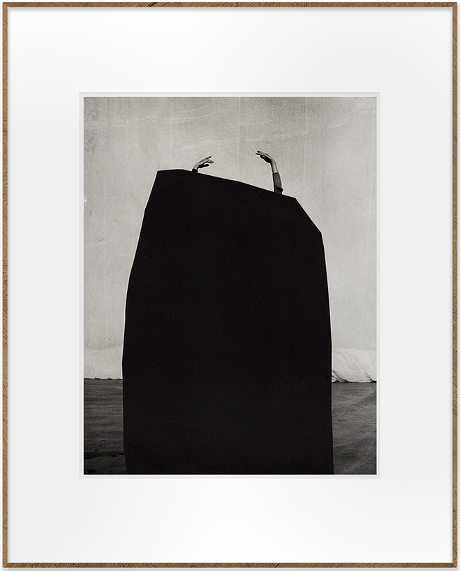

Los únicos agentes sobrenaturales que pueden permitírsenos, a
nosotros los modernos, son los fantasmas
- Henry Fielding
Ⅰ
A mediados de enero del 2020, en una librería de Madrid, me topé con
un libro de Mark Fisher1 que no
conocía, de hecho el último libro que escribiría antes de suicidarse
exactamente dos años antes.
En ese momento mi escritura giraba en torno a ciertos autores que
movían su narrativa en una zona liminal entre lo cotidiano y lo
extraño, en otras palabras, en momentos donde el mundo doméstico no
coincide consigo mismo.
En ese momento mi escritura giraba en torno a ciertos autores que
movían su narrativa en una zona liminal entre lo cotidiano y lo
extraño, en otras palabras, en momentos donde el mundo doméstico no
coincide consigo mismo.
El libro se llama The Weird and the Eerie (Lo Raro y lo
Espeluznante, Ed. Alpha Decay) y de inmediato quedé atrapado en un
universo donde Fisher despliega, con la lucidez de siempre, una
(i)lógica de lo inquietante y la transforma en un juego de cristales
ópticos por donde mirar una parte importante de la cultura
contemporánea.
Para ilustrar estos dos conceptos, Fisher hace una lista de artistas
(escritores, pintores, cineastas y músicos), un nomenclátor2
personal que forma parte del universo del autor y, hay que decirlo,
del de muchos de nosotros. También aprovecha este ensayo para cargar
contra el capitalismo (ese escándalo metafísico
), lo trae al
ruedo para ayudar a definirlo como una entidad espeluznante (A pesar de surgir de la nada, el capital ejerce más influencia
que cualquier entidad supuestamente sustancial
. (Ver
Realismo capitalista. ¿No hay alternativa? (Caja
Negra, Buenos Aires, 2016).
La inteligencia con la que el creador del blog K-punk, plantea “por
qué algo es raro” y “por qué es espeluznante” es de por sí un poco
espeluznante. No solo porque el análisis es claro y conciso, sino
también porque está sostenido, como es habitual en sus ensayos, con
reflexiones filosóficas certeras e interpelantes. Hay que decir
también que Fisher en ningún momento se planteó resolver nada y
mucho menos hacer un ensayo estético sobre los autores que refiere,
lo que sí hizo, y con éxito, es hacer las preguntas correctas,
plantear mejor el misterio.
No obstante, es difícil y no es el objetivo de esta nota, comentar
el libro (
ver reseña en la diaria, 17 de setiembre de 2020), la idea es aplicar directamente el “Dispositivo Fisher” a obras
de artistas uruguayos que me parecen interesantes y de paso
ejemplificar el planteo que propone Mark Fisher y que transformo a
mi capricho en “método”.
Ⅱ - Lo que no debería estar ahí
Lo raro y lo espeluznante nos permiten ver el interior desde la
perspectiva exterior
Las obras elegidas no son inocentes, porque las elecciones son
siempre afectivas, pero encajan muy bien en el universo que el autor
plantea. El análisis, en primera instancia, tiene como cometido dar
“cuerpo” (el término tampoco es inocente) a estos dos conceptos, por
lo que el abordaje no será estrictamente “pictórico” sino relacional
al libro. En segunda instancia ni siquiera será un análisis, sino
más bien una re-lectura.
Ambas obras son altamente resonantes dentro del nomenclátor
fisheriano, es más algunos de los nombres que el autor cita,
probablemente hayan influido en estos artistas. Pero estas obras se
mueven cada una en su particular universo de intensidad y por
supuesto no son comparables. Como tampoco lo raro y lo espeluznante
tienen una misma pulsión con distintas intensidades, sino que son
molecularmente diferentes, los dos conceptos ocultan diferentes
preguntas.
- Título: Firmus
- Técnica: óleo sobre lienzo
- Formato: 27 x 35 cm
- Año: 2019
Lo raro es aquello que no debería estar ahí, es la irrupción de algo
en la vida cotidiana. Y cambiando de eje la cámara, también aquello
que debería estar ahí y no está, la ausencia de algo.
Esta obra de Ceppi, que pertenece a una serie llamada
Antídoto, tiene una narrativa: podemos reconocer
ciertos personajes, pero si lo que pasa (o lo que pasó) fuera de
cuadro, es ciertamente inquietante, lo que está pasando dentro lo es
más.
Todos los recursos son los mínimos imprescindibles para crear un
clima y todo está, como es habitual en la pintura de Ceppi, en
función de esa atmósfera. El autor logra ese clima de extrañamiento
combinando muy sutilmente algunos recursos:
Por un lado, pinceladas gruesas que construyen abstracción y que
están convenientemente usadas para dejar planteadas varias dudas
(por ejemplo sobre la manito del niño).
Una paleta sutil pero con violentas irrupciones de blanco, que en
este caso es de una nada potente, una nada activa.
Y dos elementos raros por excelencia: la ausencia (la cara
de la enfermera, esa boca carga con el peso de tener que contar la
mitad de la historia) y la irrupción de algo exterior (la cara del
niño, algo mataloide que viene claramente de otro lado pero que
compone de manera natural con él, quizá que nació con él).
Entendemos clima como lo que está entre, un algo
extraño y más denso que el aire, que lo rodea todo. Una especie de
miedo que, como todo miedo de buena calidad, no se puede explicar.
Esa es la extrañeza de la que habla Fisher para definir lo raro, un
corrimiento de unos grados en la realidad, los estrictamente
necesarios. Esta obra hace exactamente eso.
Pero en la pintura de Ceppi no hay collage, hay umbrales. Estos
umbrales se activan en escenarios cotidianos, que es donde mejor se
amplifican. Se sabe que lo extraordinario acontece siempre en lo
ordinario y por eso, este cuadro se puede contar pero no explicar.
Se podría decir que por aparición o por ausencia, comprobamos la
maravilla (o el horror, el otro punto de vista) de manera sensorial.
Como si bajáramos una escalera empinada y la baranda de la que nos
agarramos comenzara a adquirir otras formas y texturas sospechosas.
Hasta aquí estaríamos en los dominios de lo raro, pero lo
espeluznante nos oculta otras historias.
Ⅲ - Un corte profundo
¿Qué tuvo que suceder para causar aquella desaparición, aquellas
ruinas? ¿Qué tipo de entidad tuvo que ver con ello?
Volviendo al collage, parece obvio que este coquetea con lo raro
buscando generar fronteras, un conflicto de realidades, dos o más
cosas, en un mismo plano, que no deberían tocarse. La causa
surrealista incorporó esta técnica como parte de su artillería e
hizo de ella un statement.
Pero con la obra de Juan Fielitz pasa algo diferente. Una cosa es
unir elementos que no deberían estar unidos, y otra diferente es
implantar, también por corte, zonas stalker que automáticamente
generan ciertas preguntas: ¿qué pasó con lo que falta? o
¿de dónde viene esto?

- Título: Manos
- Técnica: Collage sobre papel
- Formato: 17 x 23 cm
- Año: 2017
Según Mark Fisher, lo espeluznante también está ligado con
lo exterior, aunque quizá un exterior menos empírico y más
abstracto. De hecho algo de ese exterior está relacionado con
escenarios abiertos, incluso (o especialmente) desprovisto de
humanos.
Fielitz, interviene doblemente, primero curando muy bien las
imágenes que va a intervenir (sus víctimas), y luego accionando
sobre ellas un recorte, un territorio de silencio. También podríamos
decir un “edificio de silencio” porque estas metáforas geográficas y
arquitectónicas guardan una especial relación con la geometría.
Hay una desafección extrema en el concepto de espeluznante,
un corte radical con las referencias. Perdemos los parámetros
afectivos, nos asomamos a un universo con leyes (si es que las
tiene) que no conocemos. La obra de Juan Fielitz tiene mucho, por su
limpieza gráfica, de esa asepsia.
¿Por qué hay algo cuando no debería haber nada, por qué no hay nada
cuando debería haber algo? Estas preguntas existenciales tienen
relación con lo espeluznante. Quizá
eso que falta o eso que sobra no sea, en sí mismo
algo extraordinario, lo realmente inquietante es de qué o
de quién fue obra. Por eso, en esta obra, por ejemplo, no
hay mezcla de mundos diferentes sino la aparición de un violento y
quirúrgico espacio de silencio (o de alarido, si volvemos a cambiar
el eje de la cámara). Un espacio de nada, esa podría ser la otra
lectura, una nada violenta (¿de donde viene esa nada? ¿por qué nos
deja ver ciertas partes de lo que está “atrás”), Ceppi, entre otros
recursos también utiliza esta nada, en tanto Fielitz lo
explora intensamente.
También esta obra nos remite a otro tópico explorado en el libro, un
concepto freudiano, cautivante y difícil de definir:
unheimlich. Quizá no del todo bien traducido como lo
siniestro u ominoso, la expresión más adecuada para definirlo
estaría más cerca de su etimología: inquietante o como dice
Fisher no sentirse en casa. Este concepto podría
perfectamente ser transversal a la obra de Ceppi y a la de Fielitz
porque es una sensación, un sentimiento elegante de ajenidad
abstracta. Y Cuando digo elegante, lo menciono como un matiz
inventado, un tercer pensamiento que se abre y crea un espacio entre
dos cosas.
Tal vez los conceptos de raro y espeluznante, según Fisher,
funcionen como una advertencia o mejor como una señal de tránsito,
podemos elegir seguir de largo pero no podemos decir que no la
vimos.
Claudio Burguez
Es escritor y artista visual.
Desde 1992 funda varias bandas
o colectivos artísticos.
Ha publicado: Finlandia, 2006. El gran Algo, 2010. Perro de
Aeropuerto 2011 (Estuario Editora y reeditado por Ediciones
Liliputienses, España ). Las cosas que quiero no se quieren entre
sí, narrativa 2019 (Pez en el hielo). La sangre, ensayo ficcionado
2020 (Pez en el hielo).
Como curador ha participado, entre otras muestras, en:
Transfiguraciones (FILBA: Festival Internacional de Literatura de
Buenos Aires 2014). Sinestesia (Espacio de Arte Contemporáneo EAC,
Mundial de Poesía 2015). Desmantelamiento (Pera de Goma, 2016).
AMP-MAP, CCE 2017.
Organizó el FILBA (Festival Internacional de Literatura de Buenos
Aires) edición Montevideo en 2014 y 2015. Participó en el Mundial
de Poesía Montevideo en el 2013, 2015 y 2017.
En 2018 gana el FEFCA (MEC) a la trayectoria. Fundador de
Residencias Silvestres (sistema de residencias artísticas para
escritores y artistas visuales).
En 2021 recibe una beca de
investigación de IDENSITAT- Consorcio de Museos/España para
residir 3 meses en Valencia y desarrollar el proyecto
multidisciplinario: Turia el loco.